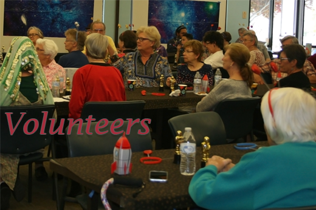
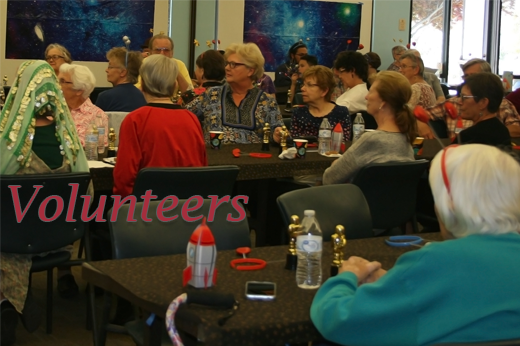

Our History
Petville Community Library was founded in 1982 as a small, volunteer-run initiative. Over the years, it has grown into a vital community resource, offering books, computers, educational programs, and events. The library moved into a larger building in 2005 and continues to adapt to the changing needs of the community, providing valuable services and fostering a love of learning.
Our Mission
Our mission is to provide a welcoming space for learning, creativity, and community engagement for people of all ages as well as to foster a love of learning, promote literacy, and provide essential resources for the Petville community.
Our Vision
To be a thriving community hub where individuals of all ages can explore their passions, discover new knowledge, and connect with others through a shared love of books and learning.
Our Values
Petville Community Library values community, education, diversity, knowledge, innovation, access, and sustainability. The library strives to be a welcoming and inclusive space for all, offering a variety of resources and programs to support the community's educational and cultural needs.
Our Impact
- Over 100,000 books borrowed annually
- 5,000+ children participated in reading programs
- 1,000+ adult education classes conducted
Our Team

 

Led by our dedicated Librarian, Jane Smith, our team of 2 Assistants and 20 volunteers work tirelessly to create a vibrant community hub.